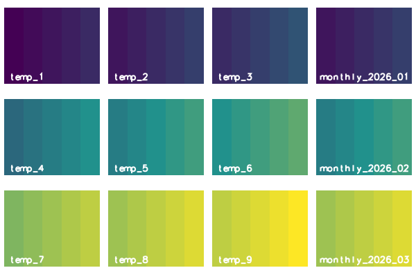

1 months, for instance. The tool runs
r.series for every granule, so the methods and the results
are those of r.series. See the
introduction to temporal data processing for space time
datasets, and t.rast.aggregate.ds for granules
that are given by the maps of another dataset.
The option input names the space time raster dataset; input=name.label
selects the maps of one semantic label. The option output names the new
space time raster dataset. It takes the temporal type, the semantic type, the
title and the description of the input dataset; its aggregation type is the
method. The option where takes an SQL condition on the registered maps
and selects the input maps, for instance by their start_time; without it,
all maps are used.
1 months or 12 hours; the units
are seconds, minutes, hours, days, weeks, months and years.
In relative time it is an integer, counted in the unit of the input dataset.
The first granule starts at the start of the first selected map, moved back to the beginning of the unit of the granularity: a year to 1 January, a month to the first of the month, a day to 00:00:00, an hour to the full hour, a minute to the full minute. The fourth example shows this for each unit. The grid ends with the granule that holds the end of the last map, or the last map itself if it is a time instant.
The option sampling is a list of temporal relations, contains by
default; it sets which maps belong to a granule. The relation is read from the
granule: with contains, a map lies within the granule; with equal, the map
has the start and the end of the granule; with overlaps, the granule starts
before the map starts and ends within the map. The other relations are
overlapped, starts, started, finishes, finished and during.
Several relations are separated by commas; a map that fits two of them, for
instance during and starts, is aggregated once. The fifth example shows
contains, overlaps and equal.
average (the
default), count, median, mode, minimum, min_raster, maximum,
max_raster, stddev, range, sum, variance, diversity, slope,
offset, detcoeff, quart1, quart3, perc90, quantile, skewness and
kurtosis. The maps of a granule are read in the order of their time, which
matters for min_raster, max_raster, slope, offset and detcoeff.
r.series skips null cells, so a cell is aggregated over the maps that have a
value there. The method quantile has no quantile option in this tool, so
r.series uses the quantile 0, and the result is the smallest value.
The flag -n registers the maps whose cells are all null. Without it, a granule whose related maps hold only null cells gives no new map. A granule without any related map gives no map in either case.
gran (the default) takes the start time of the granule, cut to the unit of
the granularity: 2026 for years, 2026_01 for months, 2026_01_12 for
days or weeks, 2026_01_14_12 for hours and 2026_01_14_12_30 for minutes;time takes the full start time, for instance 2026_01_01T00_00_00;num takes the number of the granule, from 1, with five digits; num%NN
takes NN digits, so num%03 gives 001.
The option offset is added to the number of num, 0 by default. A
granule without a related map gives no map, but its number is used, so a
numbered series can have a gap. In relative time, every suffix gives the
number, because a relative time has no calendar date.
1000 by default) or when 2 x threads x maps + 64 exceeds the
limit of open files of the process (ulimit -n). The threads are counted from
NPROCS of the GRASS session (see g.gisenv), else OMP_NUM_THREADS, else
the usable processors. With a raster mask (see r.mask), r.series runs one
thread, and so does the count. In a GRASS built without OpenMP, r.series
runs one thread; the count does not know this and may set -z earlier than
needed. The tool warns whenever it sets the flag. Without a limit on open
files, or without the Python module resource (for example on Windows),
file_limit alone counts. The flag does not change the result but is
slower: for 100 maps of 1000 x 1000 cells, r.series took 5.2 s with -z
instead of 0.25 s (measured 31.10.2026 with method sum, three runs). The eighth
example sets a low file_limit.
The option nprocs sets how many granules are aggregated at the same time,
1 by default; a value below 1 runs one process. The result does not depend
on nprocs.
A granule with a single related map is copied as it is: the method does not
matter, and the value, the type of the map (CELL stays CELL) and its colour
table stay as they were.
An existing output dataset is replaced only with --overwrite; without it the tool refuses with one message. The tool stops before the computation if the name of a new map equals the name of a map of the input dataset in the current mapset.
A dot in the name of the new dataset is refused, for instance for
output=my.out, with the message "<my.out> is not a valid name for a new
space time dataset: a dot is not allowed".
The input dataset can be in another mapset of the project; the name with the
mapset (input=temp@PERMANENT) selects it. The new maps and the new dataset
are always created in the current mapset.
If no map is related to any granule, the tool warns, names the granularity and
the sampling, and creates no dataset; it ends without an error. With monthly
granules and maps that do not start on the first day of a month, for example a
series that starts on 31 January, the default sampling contains finds
nothing; sampling=overlaps relates each map to the granule in which it
starts and which it outlasts.
Wrong input stops the tool with a message before anything is written:
<name> of
type <strds> not found".<name> is
empty". An SQL error in where gives a message that begins with "Invalid
where condition".<gram>, use gran, time,
num or num%NN" for suffix=gram.2, the message is "Invalid granularity
<2>".<1.5>") or not positive ("The granularity 0 must be
positive").
For granularity in weeks, the start of the first granule is wrong when
the first selected map starts in the first days of a month: when the day of
its month is not greater than the number of its weekday, counted from Monday
as 0. The first granule then starts after that map and does not contain it.
If no other map is related to a granule, the tool warns and creates no dataset;
the fourth example shows this. With granularity="7 days", the first granule
starts at 00:00:00 on the day of the first map, so the granules are not tied to
Mondays.
temp holds nine maps of air temperature on a region of 5 by 4
cells, three in each of January, February and March 2026, at the 1st, the 11th
and the 21st of the month. Every map is a time instant. The value of a cell is
its column number, 1 to 5, plus 0, 2 and 4 in January, 10, 12 and 14 in
February, and 20, 22 and 24 in March.
With granularity 1 months, each month is a granule that contains its
three maps, and method average gives, in each cell, the column number
plus 2, 12 and 22. The first block creates the data, aggregates, and lists
the new maps with their granules and with the smallest and largest value of
each map: 3 and 7 in January, 13 and 17 in February, 23 and 27 in March. The
second block prints the statistics of the new maps with
t.rast.univar. The mean of the cells is the mean of the
columns, 3, plus 2, 12 and 22, so 5, 15 and 25.
Command line:
g.region n=4 s=0 e=5 w=0 res=1
for map in "temp_1 0" "temp_2 2" "temp_3 4" "temp_4 10" "temp_5 12" \
"temp_6 14" "temp_7 20" "temp_8 22" "temp_9 24"; do
set -- $map
r.mapcalc expression="$1 = col() + $2"
done
t.create output=temp title="Air temperature" \
description="Three readings per month"
t.register input=temp maps=temp_1,temp_2,temp_3 \
start=2026-01-01 increment="10 days"
t.register input=temp maps=temp_4,temp_5,temp_6 \
start=2026-02-01 increment="10 days"
t.register input=temp maps=temp_7,temp_8,temp_9 \
start=2026-03-01 increment="10 days"
t.rast.aggregate input=temp output=monthly basename=monthly \
granularity="1 months" method=average
t.rast.list input=monthly columns=name,start_time,end_time,min,max
name|start_time|end_time|min|max monthly_2026_01|2026-01-01 00:00:00|2026-02-01 00:00:00|3.0|7.0 monthly_2026_02|2026-02-01 00:00:00|2026-03-01 00:00:00|13.0|17.0 monthly_2026_03|2026-03-01 00:00:00|2026-04-01 00:00:00|23.0|27.0
t.rast.univar input=monthly
id|semantic_label|start|end|non_null_cells|null_cells|min|max|range|mean|mean_of_abs|stddev|variance|coeff_var|sum|sum_abs monthly_2026_01@PERMANENT||2026-01-01 00:00:00|2026-02-01 00:00:00|20|0|3|7|4|5|5|1.4142135623731|2|28.2842712474619|100|100 monthly_2026_02@PERMANENT||2026-02-01 00:00:00|2026-03-01 00:00:00|20|0|13|17|4|15|15|1.4142135623731|2|9.42809041582064|300|300 monthly_2026_03@PERMANENT||2026-03-01 00:00:00|2026-04-01 00:00:00|20|0|23|27|4|25|25|1.4142135623731|2|5.65685424949238|500|500
Python (grass.tools):
from grass.tools import Tools
tools = Tools()
tools.g_region(n=4, s=0, e=5, w=0, res=1)
offsets = {1: 0, 2: 2, 3: 4, 4: 10, 5: 12, 6: 14, 7: 20, 8: 22, 9: 24}
for number, offset in offsets.items():
tools.r_mapcalc(expression=f"temp_{number} = col() + {offset}")
tools.t_create(
output="temp", title="Air temperature", description="Three readings per month"
)
for maps, start in (
("temp_1,temp_2,temp_3", "2026-01-01"),
("temp_4,temp_5,temp_6", "2026-02-01"),
("temp_7,temp_8,temp_9", "2026-03-01"),
):
tools.t_register(input="temp", maps=maps, start=start, increment="10 days")
tools.t_rast_aggregate(
input="temp",
output="monthly",
basename="monthly",
granularity="1 months",
method="average",
)
print(
tools.t_rast_list(input="monthly", columns="name,start_time,end_time,min,max").text
)
name|start_time|end_time|min|max monthly_2026_01|2026-01-01 00:00:00|2026-02-01 00:00:00|3.0|7.0 monthly_2026_02|2026-02-01 00:00:00|2026-03-01 00:00:00|13.0|17.0 monthly_2026_03|2026-03-01 00:00:00|2026-04-01 00:00:00|23.0|27.0
print(tools.t_rast_univar(input="monthly").text)
id|semantic_label|start|end|non_null_cells|null_cells|min|max|range|mean|mean_of_abs|stddev|variance|coeff_var|sum|sum_abs monthly_2026_01@PERMANENT||2026-01-01 00:00:00|2026-02-01 00:00:00|20|0|3|7|4|5|5|1.4142135623731|2|28.2842712474619|100|100 monthly_2026_02@PERMANENT||2026-02-01 00:00:00|2026-03-01 00:00:00|20|0|13|17|4|15|15|1.4142135623731|2|9.42809041582064|300|300 monthly_2026_03@PERMANENT||2026-03-01 00:00:00|2026-04-01 00:00:00|20|0|23|27|4|25|25|1.4142135623731|2|5.65685424949238|500|500
temp in three rows, one row per month, and
at the right of each row the monthly average of that month, from the previous
example. All maps share one colour table, from the smallest value 1 to the
largest value 29, so the same colour means the same temperature in all twelve
maps. r.colors sets the table, d.frame makes one frame per map, d.rast
draws the map and d.text names it.
Command line:
for maps in temp_1,temp_2,temp_3,temp_4,temp_5,temp_6,temp_7,temp_8,temp_9 \
monthly_2026_01,monthly_2026_02,monthly_2026_03; do
r.colors map=$maps rules=- <<EOF
1 68:1:84
15 33:145:140
29 253:231:37
EOF
done
d.mon start=cairo output=t_rast_aggregate_months.png width=600 height=400
for month in 01 02 03; do
row=$((10#$month - 1))
top=$((99 - 33 * row))
col=0
for map in temp_$((3 * row + 1)) temp_$((3 * row + 2)) \
temp_$((3 * row + 3)) monthly_2026_$month; do
d.frame -c frame=f_${row}_$col at=$((top - 31)),$top,$((25 * col + 1)),$((25 * col + 24))
d.rast map=$map
d.text text=$map at=5,5 size=12 color=white
col=$((col + 1))
done
done
d.mon stop=cairo
Python (grass.tools):
from io import StringIO
rules = "1 68:1:84\n15 33:145:140\n29 253:231:37\n"
for maps in (
"temp_1,temp_2,temp_3,temp_4,temp_5,temp_6,temp_7,temp_8,temp_9",
"monthly_2026_01,monthly_2026_02,monthly_2026_03",
):
tools.r_colors(map=maps, rules=StringIO(rules))
tools.d_mon(start="cairo", output="t_rast_aggregate_months.png", width=600, height=400)
for row, month in enumerate(("01", "02", "03")):
top = 99 - 33 * row
names = [f"temp_{3 * row + step}" for step in (1, 2, 3)]
for col, name in enumerate(names + [f"monthly_2026_{month}"]):
tools.d_frame(
flags="c",
frame=f"f_{row}_{col}",
at=[top - 31, top, 25 * col + 1, 25 * col + 24],
)
tools.d_rast(map=name)
tools.d_text(text=name, at=[5, 5], size=12, color="white")
tools.d_mon(stop="cairo")

Figure: The three maps of each month, from January at the top to March at the bottom, and their monthly average at the right.
temp, each with a different method, a
different suffix and, in the second block, an offset. The output lists
the maps with their granules and the smallest and the largest value.
maximum with suffix time names the maps with the full
start time. The largest value of a cell in January is its column number
plus 4, so the maps hold 5 to 9 in January, 15 to 19 in February and 25 to
29 in March.minimum with suffix num%03 and offset 10 numbers
the maps with three digits, counting from 1 plus the offset: 11, 12 and 13.
The smallest value of a cell is its column number plus 0, 10 and 20, so
the maps hold 1 to 5, 11 to 15 and 21 to 25.2 months with method sum makes granules of two
months, January and February, and March and April. The sum of the six maps
of the first granule in a cell is six times its column number plus 42, so
the first map holds 48 to 72; the three maps of March sum to three times
the column number plus 66, so the second map holds 69 to 81.Command line:
t.rast.aggregate input=temp output=top basename=top \
granularity="1 months" method=maximum suffix=time
t.rast.list input=top columns=name,start_time,min,max
name|start_time|min|max top_2026_01_01T00_00_00|2026-01-01 00:00:00|5.0|9.0 top_2026_02_01T00_00_00|2026-02-01 00:00:00|15.0|19.0 top_2026_03_01T00_00_00|2026-03-01 00:00:00|25.0|29.0
t.rast.aggregate input=temp output=bottom basename=bottom \
granularity="1 months" method=minimum suffix=num%03 offset=10
t.rast.list input=bottom columns=name,start_time,min,max
name|start_time|min|max bottom_011|2026-01-01 00:00:00|1.0|5.0 bottom_012|2026-02-01 00:00:00|11.0|15.0 bottom_013|2026-03-01 00:00:00|21.0|25.0
t.rast.aggregate input=temp output=bimonthly basename=bimonthly \
granularity="2 months" method=sum
t.rast.list input=bimonthly columns=name,start_time,end_time,min,max
name|start_time|end_time|min|max bimonthly_2026_01|2026-01-01 00:00:00|2026-03-01 00:00:00|48.0|72.0 bimonthly_2026_03|2026-03-01 00:00:00|2026-05-01 00:00:00|69.0|81.0
Python (grass.tools):
tools.t_rast_aggregate(
input="temp",
output="top",
basename="top",
granularity="1 months",
method="maximum",
suffix="time",
)
print(tools.t_rast_list(input="top", columns="name,start_time,min,max").text)
name|start_time|min|max top_2026_01_01T00_00_00|2026-01-01 00:00:00|5.0|9.0 top_2026_02_01T00_00_00|2026-02-01 00:00:00|15.0|19.0 top_2026_03_01T00_00_00|2026-03-01 00:00:00|25.0|29.0
tools.t_rast_aggregate(
input="temp",
output="bottom",
basename="bottom",
granularity="1 months",
method="minimum",
suffix="num%03",
offset=10,
)
print(tools.t_rast_list(input="bottom", columns="name,start_time,min,max").text)
name|start_time|min|max bottom_011|2026-01-01 00:00:00|1.0|5.0 bottom_012|2026-02-01 00:00:00|11.0|15.0 bottom_013|2026-03-01 00:00:00|21.0|25.0
tools.t_rast_aggregate(
input="temp",
output="bimonthly",
basename="bimonthly",
granularity="2 months",
method="sum",
)
print(
tools.t_rast_list(
input="bimonthly", columns="name,start_time,end_time,min,max"
).text
)
name|start_time|end_time|min|max bimonthly_2026_01|2026-01-01 00:00:00|2026-03-01 00:00:00|48.0|72.0 bimonthly_2026_03|2026-03-01 00:00:00|2026-05-01 00:00:00|69.0|81.0
clock holds three time instants on 14 January 2026, a Wednesday, at
12:30:45, 12:31:10 and 12:31:35, with the values 1, 2 and 3. The first block
aggregates it with six granularities, from years to minutes, and lists the new
maps of each. The first granule starts at the beginning of the unit of the
granularity: 2026-01-01 for years, 2026-01-01 for months, 2026-01-12
(the Monday) for weeks, 2026-01-14 for days, 12:00:00 for hours and
12:30:00 for minutes. With minutes, the first instant (12:30:45) lies in
the granule from 12:30 and the other two (12:31:10 and 12:31:35) in the granule
from 12:31, so there are two granules.
The second block shows the trap of the weeks. The dataset early holds one
map at 3 January 2026, a Saturday, which has the weekday number 5 and lies on
the 3rd, a day not greater than 5. The tool warns that no map is related to any
granule, because the first granule starts after the map, and creates no
dataset, as the list of the datasets shows; with 7 days, the granule starts
on the day of the map.
Command line:
r.mapcalc expression="clock_1 = 1"
r.mapcalc expression="clock_2 = 2"
r.mapcalc expression="clock_3 = 3"
t.create output=clock title="Clock" description="Three instants"
t.register input=clock maps=clock_1,clock_2,clock_3 \
start="2026-01-14 12:30:45" increment="25 seconds"
for unit in years months weeks days hours minutes; do
t.rast.aggregate input=clock output=by_$unit basename=by_$unit \
granularity="1 $unit" method=sum
t.rast.list input=by_$unit columns=name,start_time,end_time
done
name|start_time|end_time by_years_2026|2026-01-01 00:00:00|2027-01-01 00:00:00 name|start_time|end_time by_months_2026_01|2026-01-01 00:00:00|2026-02-01 00:00:00 name|start_time|end_time by_weeks_2026_01_12|2026-01-12 00:00:00|2026-01-19 00:00:00 name|start_time|end_time by_days_2026_01_14|2026-01-14 00:00:00|2026-01-15 00:00:00 name|start_time|end_time by_hours_2026_01_14_12|2026-01-14 12:00:00|2026-01-14 13:00:00 name|start_time|end_time by_minutes_2026_01_14_12_30|2026-01-14 12:30:00|2026-01-14 12:31:00 by_minutes_2026_01_14_12_31|2026-01-14 12:31:00|2026-01-14 12:32:00
r.mapcalc expression="early_1 = 1"
t.create output=early title="Early" description="One map in a first week"
t.register input=early maps=early_1 start=2026-01-03
t.rast.aggregate input=early output=early_weeks basename=early_weeks \
granularity="1 weeks" method=sum
t.rast.aggregate input=early output=early_days basename=early_days \
granularity="7 days" method=sum
t.rast.list input=early_days columns=name,start_time,end_time
t.list type=strds columns=name
name|start_time|end_time early_days_2026_01_03|2026-01-03 00:00:00|2026-01-10 00:00:00 bimonthly bottom by_days by_hours by_minutes by_months by_weeks by_years clock early early_days monthly temp top
Python (grass.tools):
for number in (1, 2, 3):
tools.r_mapcalc(expression=f"clock_{number} = {number}")
tools.t_create(output="clock", title="Clock", description="Three instants")
tools.t_register(
input="clock",
maps="clock_1,clock_2,clock_3",
start="2026-01-14 12:30:45",
increment="25 seconds",
)
for unit in ("years", "months", "weeks", "days", "hours", "minutes"):
tools.t_rast_aggregate(
input="clock",
output=f"by_{unit}",
basename=f"by_{unit}",
granularity=f"1 {unit}",
method="sum",
)
print(
tools.t_rast_list(input=f"by_{unit}", columns="name,start_time,end_time").text
)
name|start_time|end_time by_years_2026|2026-01-01 00:00:00|2027-01-01 00:00:00 name|start_time|end_time by_months_2026_01|2026-01-01 00:00:00|2026-02-01 00:00:00 name|start_time|end_time by_weeks_2026_01_12|2026-01-12 00:00:00|2026-01-19 00:00:00 name|start_time|end_time by_days_2026_01_14|2026-01-14 00:00:00|2026-01-15 00:00:00 name|start_time|end_time by_hours_2026_01_14_12|2026-01-14 12:00:00|2026-01-14 13:00:00 name|start_time|end_time by_minutes_2026_01_14_12_30|2026-01-14 12:30:00|2026-01-14 12:31:00 by_minutes_2026_01_14_12_31|2026-01-14 12:31:00|2026-01-14 12:32:00
tools.r_mapcalc(expression="early_1 = 1")
tools.t_create(output="early", title="Early", description="One map in a first week")
tools.t_register(input="early", maps="early_1", start="2026-01-03")
tools.t_rast_aggregate(
input="early",
output="early_weeks",
basename="early_weeks",
granularity="1 weeks",
method="sum",
)
tools.t_rast_aggregate(
input="early",
output="early_days",
basename="early_days",
granularity="7 days",
method="sum",
)
print(tools.t_rast_list(input="early_days", columns="name,start_time,end_time").text)
print(tools.t_list(type="strds", columns="name").text)
name|start_time|end_time early_days_2026_01_03|2026-01-03 00:00:00|2026-01-10 00:00:00 bimonthly bottom by_days by_hours by_minutes by_months by_weeks by_years clock early early_days monthly temp top
periods holds four maps of ten days each, p_1 to p_4, with
the values 1 to 4 in every cell. The maps follow each other: p_1 runs from
21 to 31 January, p_2 from 31 January to 10 February, p_3 from 10 to
20 February and p_4 from 20 February to 2 March. Two maps cross the border of
a month.
With the default sampling contains and monthly granules, only p_1
lies within January and only p_3 within February: each granule has a single
map and copies it, so the new maps hold 1 and 3. With contains,overlaps, the
granule January also takes p_2, because the granule starts before the map
and ends within it, and the granule February takes p_4; the sums are 1 + 2 =
3 and 3 + 4 = 7. The third block adds where, which leaves out the maps
that start before February: only p_3 and p_4 are left, and the first
granule starts on 1 February, the beginning of the month of p_3. The fourth
block aggregates the three monthly maps of the first example: each has the
start and the end of a granule, so sampling equal relates it to that
granule, and the granule copies it.
Command line:
for number in 1 2 3 4; do
r.mapcalc expression="p_$number = $number"
done
t.create output=periods title="Periods" description="Ten day periods"
t.register input=periods maps=p_1 start=2026-01-21 end=2026-01-31
t.register input=periods maps=p_2 start=2026-01-31 end=2026-02-10
t.register input=periods maps=p_3 start=2026-02-10 end=2026-02-20
t.register input=periods maps=p_4 start=2026-02-20 end=2026-03-02
t.rast.aggregate input=periods output=contained basename=contained \
granularity="1 months" method=sum
t.rast.list input=contained columns=name,start_time,min,max
name|start_time|min|max contained_2026_01|2026-01-01 00:00:00|1.0|1.0 contained_2026_02|2026-02-01 00:00:00|3.0|3.0
t.rast.aggregate input=periods output=touched basename=touched \
granularity="1 months" method=sum sampling=contains,overlaps
t.rast.list input=touched columns=name,start_time,min,max
name|start_time|min|max touched_2026_01|2026-01-01 00:00:00|3.0|3.0 touched_2026_02|2026-02-01 00:00:00|7.0|7.0
t.rast.aggregate input=periods output=february basename=february \
granularity="1 months" method=sum sampling=contains,overlaps \
where="start_time >= '2026-02-01'"
t.rast.list input=february columns=name,start_time,min,max
name|start_time|min|max february_2026_02|2026-02-01 00:00:00|7.0|7.0
t.rast.aggregate input=monthly output=copied basename=copied \
granularity="1 months" method=sum sampling=equal
t.rast.list input=copied columns=name,start_time,min,max
name|start_time|min|max copied_2026_01|2026-01-01 00:00:00|3.0|7.0 copied_2026_02|2026-02-01 00:00:00|13.0|17.0 copied_2026_03|2026-03-01 00:00:00|23.0|27.0
Python (grass.tools):
for number in (1, 2, 3, 4):
tools.r_mapcalc(expression=f"p_{number} = {number}")
tools.t_create(output="periods", title="Periods", description="Ten day periods")
for number, start, end in (
(1, "2026-01-21", "2026-01-31"),
(2, "2026-01-31", "2026-02-10"),
(3, "2026-02-10", "2026-02-20"),
(4, "2026-02-20", "2026-03-02"),
):
tools.t_register(input="periods", maps=f"p_{number}", start=start, end=end)
tools.t_rast_aggregate(
input="periods",
output="contained",
basename="contained",
granularity="1 months",
method="sum",
)
print(tools.t_rast_list(input="contained", columns="name,start_time,min,max").text)
name|start_time|min|max contained_2026_01|2026-01-01 00:00:00|1.0|1.0 contained_2026_02|2026-02-01 00:00:00|3.0|3.0
tools.t_rast_aggregate(
input="periods",
output="touched",
basename="touched",
granularity="1 months",
method="sum",
sampling="contains,overlaps",
)
print(tools.t_rast_list(input="touched", columns="name,start_time,min,max").text)
name|start_time|min|max touched_2026_01|2026-01-01 00:00:00|3.0|3.0 touched_2026_02|2026-02-01 00:00:00|7.0|7.0
tools.t_rast_aggregate(
input="periods",
output="february",
basename="february",
granularity="1 months",
method="sum",
sampling="contains,overlaps",
where="start_time >= '2026-02-01'",
)
print(tools.t_rast_list(input="february", columns="name,start_time,min,max").text)
name|start_time|min|max february_2026_02|2026-02-01 00:00:00|7.0|7.0
tools.t_rast_aggregate(
input="monthly",
output="copied",
basename="copied",
granularity="1 months",
method="sum",
sampling="equal",
)
print(tools.t_rast_list(input="copied", columns="name,start_time,min,max").text)
name|start_time|min|max copied_2026_01|2026-01-01 00:00:00|3.0|7.0 copied_2026_02|2026-02-01 00:00:00|13.0|17.0 copied_2026_03|2026-03-01 00:00:00|23.0|27.0
gappy holds five maps. In January, g_1 has the column number
as value and g_2 the column number plus 2, except in column 1, where it is
null. February has two maps with only null cells, g_3 and g_4; March has
g_5, again the column number. The January average skips the null cell:
column 1 holds 1, taken from g_1 alone, and the other columns hold the
column number plus 1, so the smallest value is 1 and the largest 6.
Without -n, February gives no map, because all its cells are null, so the
dataset has two maps. The second block aggregates again with -n; the
--overwrite replaces the dataset of the first block and its maps. February
is now registered, and its map has no smallest and no largest value, which the
list shows as None.
Command line:
r.mapcalc expression="g_1 = col()"
r.mapcalc expression="g_2 = if(col() == 1, null(), col() + 2)"
r.mapcalc expression="g_3 = null()"
r.mapcalc expression="g_4 = null()"
r.mapcalc expression="g_5 = col()"
t.create output=gappy title="Gappy" description="Maps with null cells"
t.register input=gappy maps=g_1,g_2 start=2026-01-01 increment="10 days"
t.register input=gappy maps=g_3,g_4 start=2026-02-01 increment="10 days"
t.register input=gappy maps=g_5 start=2026-03-01
t.rast.aggregate input=gappy output=gappy_monthly basename=gappy \
granularity="1 months" method=average
t.rast.list input=gappy_monthly columns=name,start_time,min,max
name|start_time|min|max gappy_2026_01|2026-01-01 00:00:00|1.0|6.0 gappy_2026_03|2026-03-01 00:00:00|1.0|5.0
t.rast.aggregate -n input=gappy output=gappy_monthly basename=gappy \
granularity="1 months" method=average --overwrite
t.rast.list input=gappy_monthly columns=name,start_time,min,max
name|start_time|min|max gappy_2026_01|2026-01-01 00:00:00|1.0|6.0 gappy_2026_02|2026-02-01 00:00:00|None|None gappy_2026_03|2026-03-01 00:00:00|1.0|5.0
Python (grass.tools):
tools.r_mapcalc(expression="g_1 = col()")
tools.r_mapcalc(expression="g_2 = if(col() == 1, null(), col() + 2)")
tools.r_mapcalc(expression="g_3 = null()")
tools.r_mapcalc(expression="g_4 = null()")
tools.r_mapcalc(expression="g_5 = col()")
tools.t_create(output="gappy", title="Gappy", description="Maps with null cells")
for maps, start in (
("g_1,g_2", "2026-01-01"),
("g_3,g_4", "2026-02-01"),
):
tools.t_register(input="gappy", maps=maps, start=start, increment="10 days")
tools.t_register(input="gappy", maps="g_5", start="2026-03-01")
tools.t_rast_aggregate(
input="gappy",
output="gappy_monthly",
basename="gappy",
granularity="1 months",
method="average",
)
print(tools.t_rast_list(input="gappy_monthly", columns="name,start_time,min,max").text)
name|start_time|min|max gappy_2026_01|2026-01-01 00:00:00|1.0|6.0 gappy_2026_03|2026-03-01 00:00:00|1.0|5.0
tools.t_rast_aggregate(
input="gappy",
output="gappy_monthly",
basename="gappy",
granularity="1 months",
method="average",
flags="n",
overwrite=True,
)
print(tools.t_rast_list(input="gappy_monthly", columns="name,start_time,min,max").text)
name|start_time|min|max gappy_2026_01|2026-01-01 00:00:00|1.0|6.0 gappy_2026_02|2026-02-01 00:00:00|None|None gappy_2026_03|2026-03-01 00:00:00|1.0|5.0
model holds four maps step_1 to step_4 with the values 1 to 4,
one for each hour, from 0 to 4. With the integer granularity 2, the
granules are two hours long, in the unit of the dataset, and the sums are
1 + 2 = 3 and 3 + 4 = 7. In relative time every suffix gives the number of
the granule, so the new maps are numbered with five digits.
Command line:
for number in 1 2 3 4; do
r.mapcalc expression="step_$number = $number"
done
t.create output=model temporaltype=relative title="Model" \
description="Model output per step"
t.register -i input=model maps=step_1,step_2,step_3,step_4 \
start=0 increment=1 unit=hours
t.rast.aggregate input=model output=pairs basename=pair \
granularity=2 method=sum
t.rast.list input=pairs columns=name,start_time,end_time,min,max
name|start_time|end_time|min|max pair_00001|0|2|3.0|3.0 pair_00002|2|4|7.0|7.0
Python (grass.tools):
for number in (1, 2, 3, 4):
tools.r_mapcalc(expression=f"step_{number} = {number}")
tools.t_create(
output="model",
temporaltype="relative",
title="Model",
description="Model output per step",
)
tools.t_register(
input="model",
maps="step_1,step_2,step_3,step_4",
start=0,
increment=1,
unit="hours",
flags="i",
)
tools.t_rast_aggregate(
input="model", output="pairs", basename="pair", granularity=2, method="sum"
)
print(tools.t_rast_list(input="pairs", columns="name,start_time,end_time,min,max").text)
name|start_time|end_time|min|max pair_00001|0|2|3.0|3.0 pair_00002|2|4|7.0|7.0
2, so the tool runs
r.series with the flag -z and warns once for each granule; the message
goes to the error output and is not shown here. nprocs 3 aggregates the
three months at the same time. The result does not change: the sums of the
three maps of a month are three times the column number plus 6, 36 and 66, so
9 to 21, 39 to 51 and 69 to 81.
Command line:
t.rast.aggregate input=temp output=monthly_sum basename=monthly_sum \
granularity="1 months" method=sum nprocs=3 file_limit=2
t.rast.list input=monthly_sum columns=name,start_time,min,max
name|start_time|min|max monthly_sum_2026_01|2026-01-01 00:00:00|9.0|21.0 monthly_sum_2026_02|2026-02-01 00:00:00|39.0|51.0 monthly_sum_2026_03|2026-03-01 00:00:00|69.0|81.0
Python (grass.tools):
tools.t_rast_aggregate(
input="temp",
output="monthly_sum",
basename="monthly_sum",
granularity="1 months",
method="sum",
nprocs=3,
file_limit=2,
)
print(tools.t_rast_list(input="monthly_sum", columns="name,start_time,min,max").text)
name|start_time|min|max monthly_sum_2026_01|2026-01-01 00:00:00|9.0|21.0 monthly_sum_2026_02|2026-02-01 00:00:00|39.0|51.0 monthly_sum_2026_03|2026-03-01 00:00:00|69.0|81.0
second has its own region and no dataset of its own. The input
temp@PERMANENT names the dataset of the mapset PERMANENT; the new maps and
the new dataset are created in second, as the column mapset shows.
Command line:
g.mapset -c mapset=second
t.rast.aggregate input=temp@PERMANENT output=monthly_copy \
basename=monthly_copy granularity="1 months" method=average
t.rast.list input=monthly_copy columns=name,mapset,start_time
name|mapset|start_time monthly_copy_2026_01|second|2026-01-01 00:00:00 monthly_copy_2026_02|second|2026-02-01 00:00:00 monthly_copy_2026_03|second|2026-03-01 00:00:00
Python (grass.tools):
tools.g_mapset(flags="c", mapset="second")
tools.t_rast_aggregate(
input="temp@PERMANENT",
output="monthly_copy",
basename="monthly_copy",
granularity="1 months",
method="average",
)
print(tools.t_rast_list(input="monthly_copy", columns="name,mapset,start_time").text)
name|mapset|start_time monthly_copy_2026_01|second|2026-01-01 00:00:00 monthly_copy_2026_02|second|2026-02-01 00:00:00 monthly_copy_2026_03|second|2026-03-01 00:00:00